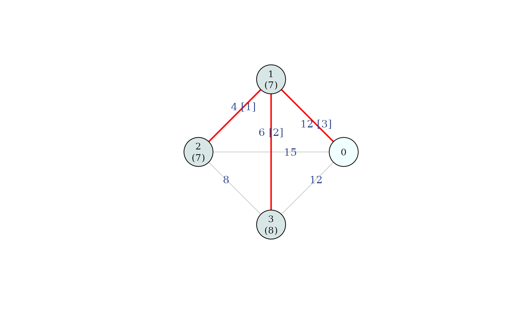

This function computes the optimistic weighted Shapley cost allocation (Bergantiños and Lorenzo- Freire, 2008a,b) for a minimum cost spanning tree problem \((N_0, C)\). The optimistic weighted Shapley rule, denoted as \(f^{\varrho^{ow}}(N_0, C)\), is defined through Kruskal's algorithm using a function with specific properties, called the obligation function \(o_i(S)\).
Arguments
- C
cost matrix between nodes. Accepts multiple formats (see "Supported formats for
C" below).- weights
a numeric vector of strictly positive weights for each agent in \(N\). The length of the vector must match the number of agents.
- draw
logical; if
TRUE, plots the network highlighting an optimal tree in red, indicating the stage at which each arc is added (in brackets) and the cost allocated to each agent (in parentheses below the node).- titles
logical; if
TRUE(default), adds a main title specifying the allocation rule and a subtitle with the algorithm used and the total network cost.
Value
A list containing:
ows: the optimistic weighted Shapley allocation vector \(f^{\varrho^{ow}}(N_0, C)\).weights: the weight vector used for the allocation.arcs: a data frame of edges \((i, j)\) in the final tree and the stage at which they were added.total: the total cost of the MCST, \(m(N_0, C)\).percentage: the share of the total cost allocated to each agent.ranking: a ranking of agents by cost (from highest to lowest; ties marked with *).is_unique: logical; ifTRUE, the MCST is unique.
Details
Following Kruskal's algorithm, let \(g^p\) be the network at stage \(p \in \{1, \dots, n\}\), and \(S_i^p := S(P(g^p), i)\) the connected component containing agent \(i\). The optimistic weighted Shapley rule is based on the obligation function:
$$o_i(S) = \dfrac{w_i}{\sum_{j \in S} w_j},$$
where \(w_i > 0\) is the weight associated with agent \(i\).
At each stage \(p\), let \(c_{i^p j^p}\) be the cost of the arc added to the network. The optimistic weighted Shapley allocation for each agent \(i \in N\) is given by:
$$f^{\varrho^{ow}}_i(N_0, C) = \displaystyle{ \sum_{p=1}^n c_{i^p j^p} \left( o_i(S_i^{p-1}) - o_i(S_i^p) \right)}.$$
Note
The optimistic weighted Shapley allocation is uniquely determined even when the minimum cost spanning tree is not unique. Since the rule depends on the evolution of the connected components rather than the specific arcs selected, any tie-breaking selection in Kruskal's algorithm yields the same cost distribution.
Furthermore, when all agents share the same weight, the optimistic weighted Shapley
allocation is mathematically equivalent to the mcstFolk.
Supported formats for C
Note: In all cases, Inf is accepted for disconnected node pairs. The first
row/column is assumed to be the source node (0).
The function accepts the following formats for the cost input:
- Numeric vector
The lower triangle of a symmetric cost matrix, excluding the diagonal. Length must be \(n(n+1)/2\), where \(n\) is the number of agents (excluding the source).
- Square matrix / Data frame
A standard adjacency matrix where
C[i, j]represents the cost between node \(i\) and node \(j\).- Edge list (matrix or data frame)
An alternative to the full matrix. It must contain columns named
"from"and"to", plus a third column for the weights/costs.- 'igraph' object
A weighted undirected graph. See the
igraphpackage for details on creating these objects.- File path
A string pointing to a
.csv,.xlsx, or.xlsfile. The file can contain either a square matrix (without headers) or an edge list (with"from"and"to"headers).
References
Bergantiños G, Lorenzo-Freire S (2008a) A characterization of optimistic weighted Shapley rules in mini- mum cost spanning tree problems. Econ Theor 35(3):523–538
Bergantiños G, Lorenzo-Freire S (2008b) “Optimistic” weighted Shapley rules in minimum cost spanning tree problems. European J Operatl Res 185(1):289–298
Bergantiños G, Vidal-Puga J (2021) A review of cooperative rules and their associated algorithms for minimum-cost spanning tree problems. SERIEs, 12:73-100
See also
mcstFolk, mcstPWShapley for other
rules based on Kruskal's algorithm.
mcstCone with rule = "owshapley" for the equivalent
implementation based on cone-wise decomposition.
mcstRules for an
overview of the available rules and analysis tools in the package.
Examples
# Simple vector input with custom weights
mcstOWShapley(c(12, 15, 20, 4, 6, 8), weights = c(2, 1, 1))
#> Weights: 2 1 1
#> 1 2 3
#> 8.33 6.17 7.50
# Matrix input with equal weights (equivalent to folk rule)
C_mat <- matrix(c(0, 12, 15, 12,
12, 0, 4, 6,
15, 4, 0, 8,
12, 6, 8, 0), byrow = TRUE, ncol = 4)
mcstOWShapley(C_mat, weights = rep(1,3), draw = TRUE, titles = FALSE)

#> Weights: 1 1 1
#> 1 2 3
#> 7 7 8